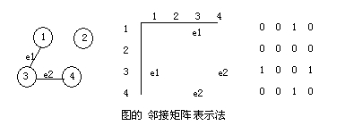

第二十八课
本课主题： 图的存储结构
教学目的： 掌握图的二种存储表示方法
教学重点： 图的数组表示及邻接表表示法
教学难点： 邻接表表示法
授课内容：
一、数组表示法
用两个数组分别存储数据元素（顶点）的信息和数据元素之间的关系（边或弧）的信息。
#define INFINITY INT_MAX //最大值无穷大
#define MAX_VERTEX_NUM 20 //最大顶点个数
typedef enum{DG,DN,AG,AN} GraphKind;//有向图，有向网，无向图，无向网
typedef struct ArcCell{
VRType adj; //VRType是顶点关系类型。对无权图，用1或0表示相邻否，对带权图，则为权值类型
InfoType *info; //该弧相关停息的指针
}ArcCell,AdjMatrix[max_vertex_num][max_vertex_num];
tpyedef struct{
VertexType vexs[MAX_VERTEX_NUM]; //顶点向量
AdjMatrix arcs; //邻接矩阵
int vexnum,arcnum; //图的当前顶点数和弧数
GraphKind kind; //图的种类标志
}MGraph;

二、邻接表
邻接表是图的一种链式存储结构。
在邻接表中，对图中每个顶点建立一个单链表，第i个单链表中的结点表示依附于顶点vi的边（对有向图是以顶点vi为尾的弧）。每个结点由三个域组成，其中邻接点域(adjvex)指示与顶点vi邻接的点在图中的位置，链域(nextarc)指示下一条边或弧的结点；数据域(info)存储和边或弧相关的信息，如权值等。每个链表上附设一个表头结点，包含链域(firstarc)指向链表中第一个结点，还设有存储顶点vi的名或其它有关信息的数据域(data)。如：
表结点
头结点
#define MAX_VERTEX_NUM 20
typedef struct ArcNode{
int adjvex; //该弧所指向的顶点的位置
struct ArcNode *nextarc; //指向下一条弧的指针
InfoType *info; //该弧相关信息的指针
}ArcNode;
typedef struct VNode{
VertexType data; //顶点信息
ArcNode *firstarc; //指向第一条依附该顶点的弧的指针
}VNode,AdjList[MAX_VERTEX_NUM];
typedef struct {
AdjList vertices; //图的当前顶点数和弧数
int vexnum,arcnum; //图的种类标志
int kind;
}ALGraph;
三、总结
图的存储包括哪些要素？